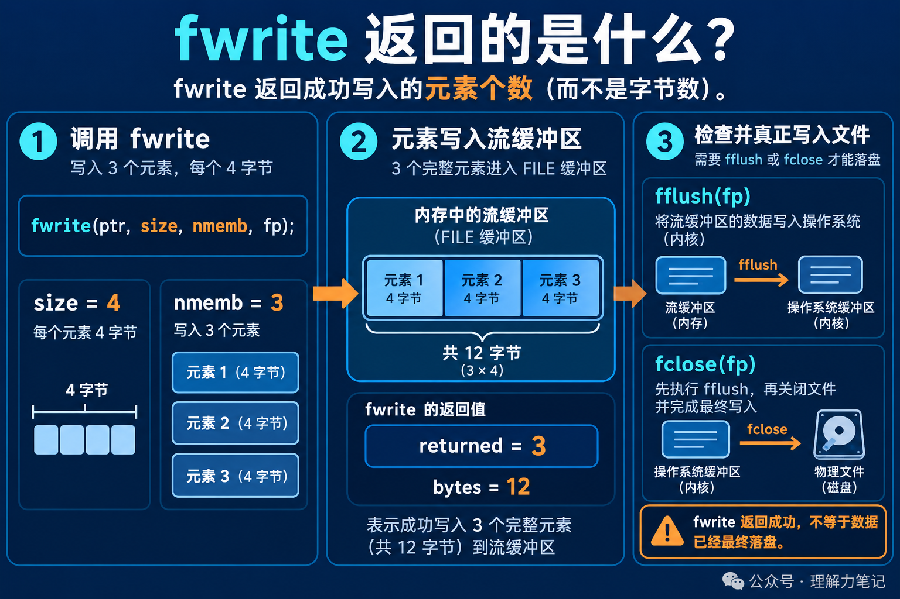

fwrite 和上一期的 fread 有一个相同的规则：返回值按“元素”计数，不按字节计数。
这句代码最多写 3 个元素，每个元素 4 字节。返回 3，表示 3 个元素被标准 I/O 接受，也就是 12 个字节对应的完整元素；返回值本身仍然是 3，不是 12。
但“被 fwrite 接受”也不是“已经安全落盘”。数据可能还在 FILE 的用户态缓冲区里，后面还要检查 fflush 或 fclose 的结果。
先记住一句话：先比较
fwrite的返回值和nmemb，再检查刷新和关闭的返回值。写入成功、刷新成功、数据持久化，是三个不同的判断。
这篇文章的实验运行在 macOS 14.8.8、Apple clang 16.0.0，未在 Linux 主机实测。fwrite 是 ISO C 标准接口；示例中的 /dev/null 只用于构造 Unix-like 系统上的写入错误路径。
这篇文章怎么读？先看 3 个 4 字节元素如何得到返回值 3，再看只检查 fwrite 为什么不够。
把待写数据想成 3 个装满货物的箱子，每个箱子 4 千克。fwrite 报告的是“交给运输系统几个完整箱子”，不是把 12 千克当成返回值。只有当 size=1 时，一个元素恰好等于一个字节，返回值才可以直接解释成字节数。
这个类比只说明计数单位。实际的 fwrite 不理解数组里的字段，也不会替你处理结构体填充、字节序或跨平台文件格式。它只是按照对象的字节表示，把最多 nmemb 个元素交给流。
如果 fwrite(data, 4, 3, fp) 返回 2，调用者能确定的是 2 个完整元素成功写入。此时应把它当成写入失败或写入不完整，不能只计算 2 * 4 后继续假设第三个元素也已经写好。

下面的程序先向临时文件写入 3 个 4 字节元素，再向只读流写入同样的数据。第一轮观察完整写入、fflush 和文件位置；第二轮观察写错误时的返回值和错误指示器。
输出如下：
第一轮返回 3，说明 3 个元素都被接受。bytes=12 是根据元素数和元素大小算出的完整元素字节数，不是 fwrite 的返回值。flush=0 表示这次刷新没有报告错误，文件位置也已经推进到 12。
第二轮对只读流写入，返回 0，并且 ferror 为真。这个例子没有制造“只写成功一部分”的平台错误，但它展示了判断顺序：返回值小于请求数量时，不能继续当成完整写入使用。
fflush 和 fclose 也要检查fwrite 可能只是把数据放进 FILE 的缓冲区。fflush(fp) 要求库把这个流的输出缓冲区交给底层对象，返回 EOF 才表示刷新失败。fclose(fp) 也可能在最后一次刷新时失败，所以关闭动作不能无条件忽略返回值。
工程代码通常至少保留这三个判断：
这段代码只表示“写入、刷新和关闭都没有报告错误”。它没有承诺数据已经抵达稳定存储设备。普通文件如果还需要崩溃后仍然保留数据，还要结合文件描述符和 fsync，那是另一层持久化问题。
还有两个边界值得记住：size 或 nmemb 为 0 时，fwrite 返回 0 且流状态不变；如果 fwrite 返回值小于 nmemb，C 标准把它定义为写错误，不要套用 fread 中“可能只是 EOF”的解释。
本文为公众号「理解力笔记」原创。转载请联系作者，并保留出处。